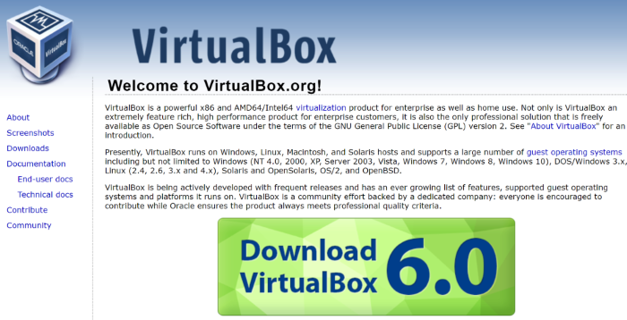
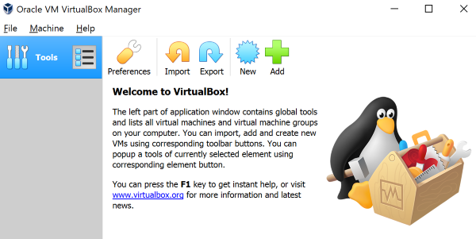
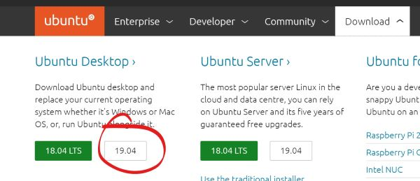
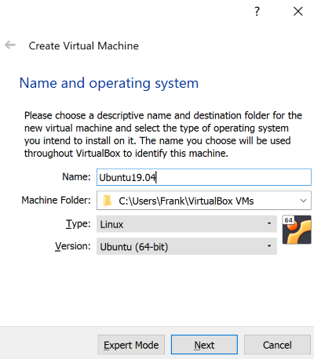

Objectives
Virtualbox · Linux
Introduction
The main purpose of this lab is to set up your laptop/workstation with the main software packages used in this module, specifically Virtualbox and the Ubuntu Operating System. Please complete this lab before the on-site days in June as downloading and installing these packages can take some time. On successful completion, you should have a "platform independent" environment to complete the labs and assignments irrespective of the type of machine/operating system you use.
There is a "computer-systems" channel on Slack so if you've any issues with the lab you can interact with us there there and/or resolve it during the Computer Systems and Networks workshop on June 13th.
Download and install Virtualbox v6.0.8

Virtualbox is a virtualisation hypervisor which provides an environment to create and provision virtual machine instances.
You will be using Virtualbox to explore machine virtualisation and operating systems. This and subsequent labs have been developed and tested using version 6.0.8. To keep your development environment consistent with the labs, you are advised to install this version.
Select the appropriate download and install Virtualbox 6.0.8 for your operating system:
Ensure that Virtualbox has installed correctly by starting the application on your machine.
All going well you should see something similar to the following:

For more information about Virtualbox and installation, have a look around the website.
Disco Dingo!!!!!!!!!!!!
Ubuntu V 19.04 was released in April 2019 and is guaranteed to have supported security and maintenance updates until April 2024
- Ubuntu is an ancient African word meaning humanity to others. It also means I am what I am because of who we all are.
- Ubuntu is free/Libre Open-Source Software
- Ubuntu is a computer operating system!!!
- Ubuntu used the Linux kernel
The Linux kernel on its own, is not an operating system, but rather a set of computer instructions, that enable communication between software applications and the data processing done at the hardware level.
Recommended system requirements(Ubuntu):
- 2 GHz dual core processor or better
- 2 GB system memory or more
- 25 GB of free hard drive space
The Ubuntu iso image file
Also:
Internet access is helpful
What is an iso image file
You will actually be downloading an iso image file. ISO images are often used to distribute large programs over the internet due to the fact that all of the program's files can be neatly contained as a single file.
With this iso image, potentially you can:
- Install or upgrade Ubuntu
- Test out the Ubuntu desktop experience without touching your PC configuration
- Boot into Ubuntu on a borrowed machine or from an internet cafe
- Use tools installed by default on the USB stick to repair or fix a broken configuration
Downloading Ubuntu 19.04
Download the latest version(19.04) via the Ubuntu download page.

Installing Ubuntu in VirtualBox
Start VirtualBox and create a new virtual machine by clicking the New icon
When the New Virtual Machine Wizard appears, enter "Ubuntu19.04" for the name, "Linux" for type, and "Ubuntu (64 bit)" for version. You can leave the Machine folder as default setting if you want.

- Click Next and select how much memory you wish to allocate to the virtual machine (we recommend you give at least 2048MB. You can increase it later if it's sluggish).

Click next and accept the default settings for the remaining options.
Finish the wizard by clicking the Create button.

The New Virtual Machine Wizard will close and you will be brought back to VirtualBox Manager.
- Select the Virtual Machine you've just created and click Start

First Run Wizard
The "First Run Wizard" should now appear appear.
_ Click Next button. On the second screen (as shown below), click at 'folder' icon and choose your Ubuntu iso file you downloaded earlier.

Click Start button to install Ubuntu. Like any OS installation, you will be asked a few configuration questions during the install process. Select the appropriate responses for language/time/keyboard etc.
WELCOME TO UBUNTU!!!!
Tutorials, tips and tricks
There are many many tutorials and resources available online to assist. Ubuntu also has a comprehensive Tutorial page. Depending on your physical machine and environment, you may have to "tweak" Virtual Box and the Ubuntu instance to get it just right. Some common fixes of note including: